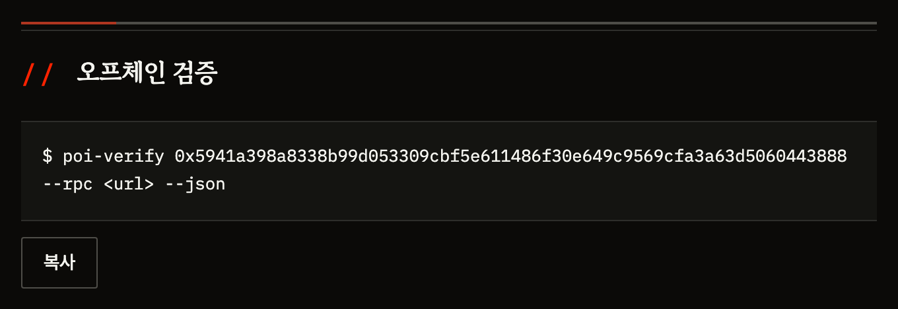
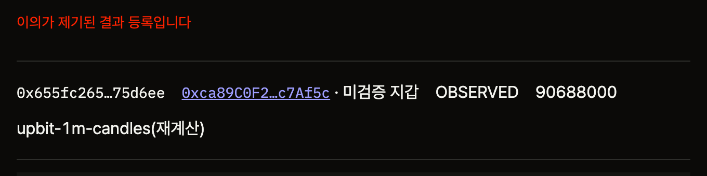

POI
투자 판단을 결과가 나오기 전에 온체인에 고정하고, 누구나 나중에 검증합니다.
2026.08
결과를 알기 전에 고정하고, 컨트랙트가 판정합니다
투자 판단 하나를 온체인에 고정하고, 구간이 끝나면 발행자가 낸 관측값과 결과가 어긋나지 못하게 컨트랙트가 산술로 강제합니다. 관측값 자체의 진실성은 보장하지 않습니다 — 8쪽 「무엇을 못 하게 만드나」.
판단을 적고 잠급니다
내용은 해시로만 올립니다. 무엇을 볼지(지표·조건·관측 구간)는 이때 미리 선언합니다.
9,000만 원을 넘는다”
구간이 끝납니다
선언해 둔 구간이 지나면 관측값이 확정됩니다. 업비트 공개 1분봉이라 누구나 같은 값을 다시 구할 수 있습니다.
출처 upbit-1m-candles
컨트랙트가 판정합니다
발행자에게 남는 자유는 관측값 하나뿐입니다. 그 값으로 맞았는지를 컨트랙트가 다시 계산해 대조하고, 어긋나면 거래를 되돌립니다.
정할 수 없습니다
이 예시는 지금 체인에 있는 실제 기록입니다. 결정 0xe7fe5923…fc2da0 · 정산 0x29da3820…69cb8d — 테스트넷에서 지갑 없이 열어 볼 수 있습니다.
시장에 남는 것은 거래 기록뿐, 판단은 남지 않습니다
투자에서 남는 것은 거래 기록과 수익률뿐입니다.
- 거래는 거래소에 남습니다얼마에 사고 팔았는지는 기록됩니다
- 판단은 어디에도 남지 않습니다「왜 그렇게 봤는가」를 보관하는 곳이 없습니다
- 그래서 결과를 본 뒤에 말할 수 있습니다— 「나는 그럴 줄 알았다」
| 트레이딩 저널 | 사후 수정 가능 |
| SNS 예측 | 지우면 그만 |
| 리더보드 | 성과만 보고 판단은 안 봅니다 |
신뢰는 개인에게 옮겨갔지만 검증 수단이 없습니다
제도권 리서치를 떠난 투자자가 개인 발신자에게 옮겨갔습니다. 이건 한 나라의 현상이 아닙니다. 그리고 어디에서도 거기서 한 말이 맞았는지 확인할 방법이 없습니다.
투자하는 미국 투자자 — 35세 미만은 61%FINRA Foundation 2024
실제로 돈을 잃은 비율 — 비팔로워는 26%FINRA Foundation 2026.03
2026.04 · 전부 사후 조치입니다영국 FCA 주도
한국에도 같은 문제가 있습니다금융감독원 2017–2025
규제는 이미 전 세계가 움직였습니다. 그런데 전부 사후 단속입니다. 벌어진 뒤에 광고를 내리고 사람을 잡습니다 — 2026년 4월 공동 단속에서만 광고 1,267건이 적발됐고 그중 66%가 이미 경고 목록에 오른 곳이었습니다. 말하기 전에 고정시키는 쪽은 비어 있습니다.
출처 FINRA Foundation 2024 National Financial Capability Study · FINRA Foundation 「Finfluencer Followers and Social Media Scrollers」 2026.03 · FCA 2026.04.20 international week of action · 금융감독원 유사투자자문 민원 집계
「누가 맞히나」를 파는 시장은 이미 형성돼 있습니다
| 근거 | 수치 | 무엇을 뜻하나 |
|---|---|---|
| Substack | 유료 구독 500만 작가 수익 $450M/년 | 글로벌은 판단에 돈을 냅니다. 최고가 4개 중 3개가 금융 — Citrini Research 연 $1,200 |
| TipRanks | 연매출 추정 $20~30M MAU 5,000만 · 2024.08 $200M 밸류 인수 | 「누가 맞히나」를 파는 회사가 실재합니다. 수익은 확인하는 쪽에서 나옵니다 — 구독 + Nasdaq·Robinhood·Morgan Stanley |
| 크립토 KOL | 정확도를 재는 곳이 없습니다 | Kaito 는 관심도, Cookie3 는 어트리뷰션을 잰다. 「이 사람 말이 맞았나」는 아무도 안 잰다 |
빈칸은 하나입니다 — 사전에 고정된 판단. 기존 서비스는 전부 사후에 관찰하고, 그래서 지운 사람과 안 지운 사람을 구별하지 못합니다.
왜 국내가 아니라 글로벌인가 — 국내는 유료 뉴스레터 시장이 아직 얕고(롱블랙 월 4,900원), 거래소 약관이 서브파티 접근을 금지해 실행 정합성이 열리지 않습니다. 해외 거래소는 가능합니다.
출처 — Substack 2025 지표 · Calcalist·Finance Magnates 2024.08(TipRanks 인수) · 매출은 외부 추정치 · Kaito·Cookie3 공식 문서
영어권 크립토 KOL 중견층부터 시작합니다
첫 대상 — 영어권 크립토 KOL
- 팔로워 1만~10만 중견층평판을 쌓는 중이라 증명 수단이 실제로 필요합니다
- 초대형(50만+) 제외이미 평판이 있어 필요가 없고, 연락도 닿지 않습니다
- 신진(1천~1만) 보조대표성이 부족합니다
- 틀린 것도 지우지 않는 사람만지우는 사람은 애초에 이 제품을 쓰지 않습니다
시장 규모와 규제 근거는 4쪽, 왜 국내가 아닌지는 5쪽에 있습니다.
| 판단을 파는 쪽 | 영어권 크립토 KOL · 유료 뉴스레터 · 리서치 작성자 이미 사후 검증 압력을 받고 있고, 자기를 구별할 반박 수단이 없습니다 1차 · 지금 |
| 판단을 읽는 쪽 | 유료 구독자 · 커뮤니티 「그때 뭐라고 했는지」를 링크 하나로 직접 확인합니다 2차 · 3단계 |
| 판단을 사는 쪽 | Web3 프로젝트 · KOL 마케팅 에이전시 · 리서치 기관 섭외 전에 이력을 확인합니다. 지금은 확인할 방법 자체가 없습니다 3차 · 첫 수익원 |
커밋 → 관측 → 판정, 세 단계로 작동합니다
결과를 보고 나서는 아무것도 바꿀 수 없습니다
| 막는 것 | 그래서 못 하는 일 |
|---|---|
| 관측 구간을 과거로 못 잡습니다 | 지나간 구간을 골라 「그때 맞혔다」고 할 수 없습니다. 커밋 시각보다 뒤여야 합니다 |
| 정산 산술을 컨트랙트가 다시 계산합니다 | 발행자가 결과를 정할 수 없습니다. 어긋난 값을 내면 트랜잭션이 되돌아갑니다 |
| 지표 정의가 문서 해시로 고정돼 있습니다 | 무엇을 어떻게 잴지를 나중에 바꿀 수 없습니다 |
보장 범위
- 보장위 세 가지 · 결정 간 선후 관계 · 결정 철회 불가
- 미보장관측값의 진실성 · 이유의 진실성 · 실제 거래와의 정합성 · 기록의 완전성
보장하지 못하는 것을 숨기지 않는 것이 이 제품의 태도입니다. 화면의 모든 목록에 「조회된 것이 전부라는 보장은 없습니다」를 표시하고, 건수를 세지 않습니다.
구독자에게 링크 하나로 증명할 수 있습니다
유료 뉴스레터를 운영하는 A. 구독자는 “이 사람 말이 맞았나”를 묻고, A 는 증명할 방법이 없습니다.
지금
3월에 “반도체 조정 온다”고 썼다. 맞았습니다. 그런데 구독자에게 보여줄 게 지난 메일 캡처뿐입니다.
경쟁자는 틀린 회차를 조용히 지웁니다. 지운 사람과 안 지운 사람이 화면에서 구별되지 않습니다.
새 구독자는 결국 “요즘 잘 맞힌다더라”는 평판으로 고릅니다.
POI 이후
발행 전에 판단을 커밋합니다. 내용은 해시로만 올라가 미리 스포일러가 되지 않습니다.
구간이 끝나면 결과를 등록합니다. 안 올리면 「기한초과」로 남습니다 — 골라 기록하는 것이 화면에 드러납니다.
구독자에게 링크 하나를 줍니다. 제3자가 직접 대조하고, 틀렸다고 보면 이의를 온체인에 남깁니다.
A 는 특정 인물이 아니라 타겟을 설명하기 위한 인물상입니다. 실제 사용자 확보는 3개월 게이트에서 검증합니다.
왜 이게 가능한 문제인가 — 자본시장연구원은 투자의견이 “주관적 기준에 따른 정성적 정보라 사후적인 검증이나 비교가 매우 어렵다”고 지적합니다. 검증을 어렵게 만드는 것은 데이터가 아니라 판단을 결과 뒤에 고칠 수 있는 구조다.
기존 서비스는 전부 사후에 관찰합니다
| 무엇을 재나 | 방식 | 규모 | |
|---|---|---|---|
| TipRanks 해외 | 애널리스트 정확도 | 공개 의견을 긁습니다 — 사후 관찰 | 연매출 추정 $20~30M 2024.08 $200M 밸류 · 경영권 인수 |
| Kaito 크립토 | 관심도(mindshare) | X API 의존 → 2026-01 차단으로 주력 종료 | 커뮤니티 15.7만 종료와 함께 사라짐 |
| Cookie3 크립토 | 온체인 어트리뷰션 | 캠페인 성과 — 정확도는 안 잰다 | — |
| 인간지표 국내 | 유튜버 발언 | 제3자 관찰 · 스스로 「가상·재미」라 밝힘 | 678건 사업 아님 |
| 예측시장 Polymarket 등 | 사건의 확률 | 사전에 포지션은 고정됩니다 — 다만 남이 연 시장에 베팅이고, 판단·근거·기준은 남지 않습니다 | — |
| POI | 본인이 사전에 고정한 판단 | 본인 커밋 · 컨트랙트 판정 | — |
카테고리는 이미 사업이 됐다 — TipRanks 가 증명했습니다. 그런데 전부 밖에서 봅니다. 밖에서 보면 대상이 관찰자가 고른 사람으로 제한되고, 기준을 대상자가 동의한 적이 없고, 무엇보다 지운 사람과 안 지운 사람을 구별하지 못합니다.
사전에 고정하고, 플랫폼에 기대지 않습니다
① 사후 관찰 → 사전 고정
관찰형은 「이 사람이 그때 뭐라고 했나」를 나중에 주워 담습니다. 지운 글은 없는 글이 되고, 기준은 관찰자가 정합니다.
POI 는 본인이 결과를 알기 전에 스스로 고정합니다. 무엇을 볼지도 그때 선언하고, 나중에 바꿀 수 없습니다.
② 플랫폼 비의존 — 가설이 아니라 실증
Kaito 는 2026년 1월 X 가 API 접근을 차단하면서 주력 제품 Yaps 를 종료했습니다. 15.7만 명이 모여 있던 커뮤니티가 함께 사라졌습니다. 남의 플랫폼 위에 세운 측정은 그 플랫폼이 문을 닫으면 같이 닫힙니다.
POI 에는 끊길 API 가 없습니다. 사용자가 스스로 온체인에 커밋하고, 판정은 컨트랙트가 합니다.
정직하게 — 기술 장벽은 낮다
같은 것을 만드는 데 특별한 기술이 필요하지 않다. 차별은 기술이 아니라 무엇을 금지했는가에 있습니다.
| 성과 랭킹 | ✗ 의도적 배제 |
| 수익률 공개 | ✗ |
| 배지 개수 정렬 | ✗ |
완전성을 보장하지 못하는데 순위를 세우면 순위 자체가 거짓말이 됩니다. 랭킹을 넣는 순간 목적이 무너지므로, 넣을 수 있어도 넣지 않습니다.
해자는 시간이 만듭니다
기록은 쌓인 뒤에 대체 불가해집니다. 「3년치 사전 커밋 이력」은 나중에 만들 수 없습니다. 초기에는 해자가 없습니다 — 그래서 공급 확보가 첫 6개월의 유일한 목표입니다.
테스트넷에서 전 경로가 동작합니다
| 무엇이 되나 | 무엇으로 확인하나 |
|---|---|
| 판단을 결과가 나오기 전에 잠급니다 | 컨트랙트 4종 — 익스플로러에서 소스 검증됨 |
| 발행자가 결과를 정할 수 없습니다 | 정산 산술을 컨트랙트가 다시 계산합니다 |
| 기준을 나중에 못 바꿉니다 | 지표 2종을 문서 해시로 고정 |
| 지갑 없이 누구나 확인합니다 | 공개 URL — 설치도 로그인도 없습니다 |
| 제3자가 이의를 남길 수 있습니다 | 실제 이의 1건이 온체인에 있습니다 |
| 직접 대조해 볼 수 있습니다 | 검증 도구 2종 · 테스트 423개 전부 통과 |
https://poi-static-production.up.railway.app ← 지갑 없이 열립니다
결과를 안 올리면 「기한초과」로 드러납니다
예상 결과를 선언해 놓고 결과를 올리지 않으면 인장이 「기한초과」로 바뀝니다. 숨길 자리가 없습니다.

인장이 상태를 말합니다
결과를 안 올린 판단은 「기한초과」로 남습니다. 발행자가 지우거나 감출 수 없습니다.
누가 말했는지가 붙습니다
발행자 주소 옆에 도장 검증 — TESTNET FAUCET. 검증 스냅샷 UID 도 함께 남습니다.
커밋 당시 선언한 것이 그대로
지표·조건·관측 구간이 커밋 시각과 함께 남습니다. 결과를 보고 나서 바꿀 수 없습니다.
화면이 검증 명령을 줍니다
같은 페이지 아래에 poi-verify 명령이 있습니다. 복사해 돌리면 MATCH(온체인 값과 재계산이 일치)가 난다 — 우리 서버를 거치지 않습니다.

지금 열립니다 — poi-static-production.up.railway.app · 결정 0x3f592f21…e16938
제3자의 이의가 온체인에 그대로 남습니다
관측값이 틀렸다고 보면 누구나 이의를 발행합니다. 발행자가 지울 수 없습니다.

이의자는 정산자와 다른 주소입니다
같은 주소면 제3자 이의로 읽히지 않습니다. 이의자가 검증 지갑인지도 함께 붙습니다 — 화면의 「미검증 지갑」이 그것입니다.
관측값과 출처를 같이 남깁니다
90,688,000 · upbit-1m-candles(재계산) — 이의도 근거를 대야 합니다. 제3자가 같은 절차로 다시 확인할 수 있습니다.
건수를 세지 않습니다
지갑 생성 비용이 사실상 0 이라 개수는 언제든 부풀릴 수 있습니다. 목록만 보여주고 숫자를 만들지 않습니다.
화면이 먼저 한계를 말합니다
「조회된 것이 전부라는 보장은 없습니다」를 목록마다 표시합니다. 보장 못 하는 것을 숨기지 않습니다.
철회 이력도 남습니다 — 정산을 철회하고 정정하면 「이전 결과 등록(철회됨)」이 펼쳐집니다. 결정 0xb1e46283…683b21
세 칸 중 둘이 검증됐고, 셋째가 열렸습니다
| 무엇을 증명하나 | 지금 | 남은 것 | |
|---|---|---|---|
| ① 말한 것 | 결정을 결과 전에 고정했습니다 | ✓ 검증됨 | 없음 — 오늘 이미 돕니다 |
| ② 본 것 | 관측·정산이 산술로 맞습니다 | ✓ 검증됨 | 관측값의 독립 증명은 아직 — 제3자 오라클 |
| ③ 한 것 | 말한 대로 실제로 거래했습니다 | 경로 확인 | 온체인 거래소는 허락이 필요 없습니다 |
2026-08-04 직접 호출해 확인했습니다
- 인증 없이 지갑 단위 체결이 조회됩니다API 키·서명·쿠키를 하나도 보내지 않았습니다. 임의 주소도 조회됩니다
- 구간 지정이 그대로 맞습니다시작·종료 시각으로 조회 — POI 의 관측 구간과 같은 모델입니다
- 술어 판정까지 됐습니다「이 구간에 BTC 롱을 열었다」 → 판정 맞음 · 4건 · 수량 0.02339
- 제3자가 재현합니다2차 호출에서 동일한 값. 우리 서버를 믿을 필요가 없습니다
가장 큰 반론이 좁아집니다
「좋은 판단만 골라 기록하면?」
선언한 지갑에서는 그 지갑의 모든 거래가 보입니다. 거래는 있는데 결정이 없으면 그것도 드러납니다.
다른 지갑을 쓰면 여전히 빠져나갑니다. 완전히 풀리지는 않습니다. 다만 「선언한 지갑 안에서의 완전성」은 증명됩니다 — 지금은 그것조차 없습니다.
실측 — 공개 API 로 지갑 단위 체결·구간 조회·술어 판정·재현성을 확인했습니다. 온체인에 올리는 것은 방향·건수·수량·평균가를 정규화한 189바이트 요약이고, 개별 체결과 잔고는 올리지 않습니다.
기록 비용이 1/702 라 판단을 자주 남길 수 있습니다
① 커밋 1건에 얼마인가
| L2 (현재) | 1.21원 | 연 36건 = 44원 |
| 이더리움 L1 | 850원 | 연 36건 = 30,600원 |
약 702배 차이입니다 (실측 · 영수증 기준). 커밋이 수천 원이면 사람들은 중요한 판단만 가끔 남깁니다. 그러면 「판단을 반복해서 남기는가」라는 질문 자체를 물을 수 없습니다.
비용이 빈도를 정하고, 빈도가 기록의 해상도를 정합니다.
② 새 신뢰 축을 세우지 않습니다
- 증명 기록 표준을 만들지 않습니다체인에 기본 탑재된 EAS 를 그대로 씁니다. 스키마·발급·철회·참조를 재구현하지 않습니다
- 신원을 우리가 인증하지 않습니다이미 있는 검증 지갑을 붙입니다 — 「누가 말했는가」를 남의 인증 위에 얹습니다
12개월 안에 공개 메인넷까지 갑니다
각 단계 끝에 멈출 수 있는 지점을 뒀습니다. 3·6·12·18개월 게이트를 넘지 못하면 그 시점에서 멈춥니다 — 기준은 검증 마일스톤 장에 있습니다.
출시 여부를 판단할 숫자는 지금 못 박지 않습니다. 4단계 30일 공개 실험의 실사용 데이터를 보고 정합니다.
증명을 확인하는 쪽이 비용을 냅니다
| B2C 구독 | 판단을 읽는 쪽 저널 · 장기 리포트 · 외부 공유 프로필 3단계 |
| 검증 수수료 | 제3자가 요청 정기 재검증 · 갱신 · 이의 대응 3단계 |
| B2B 조회 API | 리서치 기관 · 운용사 발행물에 검증 링크를 붙입니다. 건당 과금 3단계 |
| 증명 인프라 | RWA 발행사 · 금융기관 투자자 증명을 검증합니다. 개인정보를 직접 보관하지 않아도 됩니다 확장 · 25쪽 |
지금 단계에서 수익화하지 않습니다. 단가는 아직 정하지 않았습니다 — 먼저 확인할 것은 판단이 쌓이는가이고, 판단이 쌓이는 속도를 보고 정합니다.
공급을 먼저 열고, 확인하는 쪽에 판매합니다
| 시점 | 무엇을 하나 | 누가 내나 | 있어야 하는 것 |
|---|---|---|---|
| 0~6개월 | 무료. 판단이 쌓이게 합니다 커밋 비용이 건당 1.21원이라 사용자 부담이 없습니다 | 없음 | 공급 100명 |
| 6~12개월 | B2B 검증 API | Web3 프로젝트 · KOL 에이전시 섭외 전에 이력을 확인합니다 | 외부 조회 API = 채용의 이유 |
| 12~24개월 | B2C 구독 | 구독자 검증된 판단이 모이는 피드 | 판단 밀도 |
| 확장 | 증명 인프라 | RWA 발행사 · 금융기관 투자자 증명을 검증합니다 | 토큰증권 2027-02-04 시행 |
발행자에게 팔지 않습니다. 국내 유사투자자문업자 2,000곳 전부가 월 10만원을 냅니다 해도 연 25억이고, 현실 침투율이면 사업이 되지 않습니다. 돈은 증명을 확인하는 쪽에 있습니다 — TipRanks 가 그렇게 벌고 있습니다.
12~18개월에 손익분기에 닿습니다
월 고정비 — 2인 기준
인건비 2인 800만원
인프라 · 온체인 50만원
회계 · 법무 · 사무 100만원
─────────────────────
950만원 / 월
1.14억원 / 년
온체인 비용은 결정 커밋 건당 1.21원(실측)이라 사용량이 늘어도 고정비를 흔들지 않습니다.
BEP 조건 — 셋 중 하나
| B2B | 연 $20,000 라이선스 × 5곳 |
| 건당 과금 | 검증 $1 × 월 7,000건 |
| B2C | $5/월 × 1,400명 |
글로벌 기준입니다. Substack 유료 구독자만 500만이고 금융이 최고가 카테고리라, 1,400명은 국내에서보다 도달 가능한 수다.
목표 12~18개월. 전제는 하나입니다 — 6개월 안에 공급 100명. 이게 안 되면 뒤의 모든 숫자가 무의미하므로, 가장 먼저 검증합니다.
한 번 부딪혀 보고 방향을 바꿨습니다
직전에 만든 것 — 그리고 접은 이유
여러 거래소에 흩어진 자산을 한 화면에서 보는 서비스. 6개 거래소를 연동했고, 국책 R&D(창업성장기술개발 디딤돌) 1.2억 규모를 선정·수행 완료했습니다.
그런데 국내 거래소 약관이 서브파티 접근을 금지한다는 것을 직접 확인했습니다. 기술이 아니라 약관이 막는 문제라 우리가 풀 수 없었고, 런칭을 접었습니다.
VESTAT 은 남의 허락이 있어야 작동하는 구조였습니다. 약관 하나로 전부 멈췄습니다. 그래서 POI 는 허락이 필요 없는 것부터 만들었습니다 — 「말한 것」은 오늘 이미 돌고, 「한 것」도 온체인 거래소로 허락 없이 엽니다. 로드맵에서 외부에 걸린 단계는 하나뿐입니다 (17쪽).
지금 팀
| 대표 | 고보승 (BoSung Ko) · 개발 총괄 블록체인 · 디지털자산 · 결제 · 정산 10년+ (2016.04~) |
| 법인 | 현재 개인사업자 · 법인 설립 예정 |
| 합류 예정 | 백엔드 10년차 확정 전 · 팀 역량으로 세지 않음 스마트 컨트랙트 기반 경매 시스템 구축 경험 |
2인으로 글로벌을 어떻게 하나 — 첫 6개월은 크립토 KOL 100명 확보 하나에만 집중합니다. 온라인으로 되는 일이고, 그 뒤 단계는 그것이 된 다음에 판단합니다.
컨트랙트 · 프론트엔드 · 오프체인 검증기 · 문서를 1인이 전부 만들었습니다. 지금 공개 URL 에서 지갑 없이 확인할 수 있는 것이 그 결과입니다.
정산 정합성을 10년간 제품으로 만들어 왔습니다
POI 는 「발행자가 낸 값과 결과가 어긋나지 못하게 하고, 기준을 나중에 못 바꾸게 합니다」는 제품입니다. 이 두 문장이 커리어와 겹칩니다.
| 해온 일 | POI 에서 대응하는 것 |
|---|---|
| 펀드 기준가 · 지수 산출 로직 설계 | 지표 정의를 문서로 고정하고 바이트 해시를 온체인에 박습니다 |
| 운용 성과 정산 · 손익 검수 시스템 0→1 | 정산 산술을 컨트랙트가 재계산해 대조합니다 |
| 낙찰 대금 분배 · 원장 대사 설계 | 온체인 확정 트랜잭션을 원천으로 삼는 구조 |
| 거래소 이상거래 탐지 0→1 | 선점 · 다중지갑 · 복사 공격을 설계 단계에서 차단 |
| 6개 거래소 API 연동 · 데이터 정규화 직전 제품 (VESTAT) | 실행 정합성 연동 — 온체인 거래소부터 (15쪽) · 검증기 운영화와 조회 API (23쪽) |
1인이 어떻게 여기까지 만들었나 — 기획을 문서로 먼저 확정하고, 구현과 리뷰를 분리하고, 테스트를 게이트로 뒀습니다. 그 체계가 실제로 잡아낸 것들이 있습니다 — 화면의 조건 기호 6개가 전부 틀리게 표시되던 것, 심사자가 실행하면 실패했을 검증 명령, 길이를 유지한 payload 변조. 앞의 둘은 단위 테스트가 통과하는 동안 살아 있었습니다.
자금은 오프체인 병목 하나에 씁니다
POI 의 다음 병목은 컨트랙트가 아니라 오프체인입니다. 검증기를 상시 서비스로 만들고, 외부 조회 API 를 열고, 인덱서로 RPC 조회 한계를 넘는 일. 그 API 가 첫 수익 경로(B2B 검증 API)의 전제입니다.
| 비중 | 어디에 | 무엇을 위해 |
|---|---|---|
| 60% | 백엔드 1인 인건비 | 검증기 운영화 · 외부 조회 API · 인덱싱 파이프라인 = 6~12개월 차 수익 경로의 전제 |
| 20% | 공급 확보 | 크립토 KOL 100명 온보딩 · 커밋 비용 대납 건당 1.21원이라 10,000건에 12만원. 진입 마찰을 0 으로 만듭니다 |
| 15% | 인프라 · 감사 | RPC · 인덱서 운영 · 외부 보안 감사 착수 |
| 5% | 법인 · 법무 | 법인 설립 · 글로벌 서비스 약관 검토 |
채용은 인원 보강이 아니라 매출 경로를 여는 비용입니다. 조회 API 가 없으면 6~12개월 차 B2B 수익이 시작되지 않습니다.
3·6·12·18개월에 멈출 기준을 먼저 정했습니다
직전 제품에서 없었던 것은 기술이 아니라 멈추는 기준이었습니다. 이번에는 먼저 정하고 들어갑니다.
| 시점 | 넘어야 하는 것 | 미달이면 |
|---|---|---|
| 3개월 | 발행자 10명이 각 3건 이상 커밋 직접 찾아가 모으는 수 | 공급이 안 모이는 것 — 대상을 바꿔 재시도 |
| 6개월 | 발행자 100명 · 유료 의사를 밝힌 기관 1곳 10명이 소개와 공개로 번지는 수 | 공급이 안 늘거나 돈이 안 보이는 것 — 사업 지속을 재검토 |
| 12개월 | MRR 100만원 | BEP 경로가 없는 것 |
| 18개월 | 월 950만원 — 손익분기 | 구조가 안 되는 것 — 접습니다 |
10명과 100명은 성격이 다른 숫자입니다. 앞의 10명은 직접 찾아가 설득하는 수라 노력으로 채울 수 있습니다. 100명은 그 10명이 남을 데려와야 나오는 수다 — 그래서 3개월에 10명이 안 되면 6개월 100명은 물어볼 필요도 없습니다. 커밋 비용이 건당 1.21원이라 이 확인에 드는 돈은 거의 없습니다.
고정할 내용만 바꾸면 같은 구조로 확장됩니다
POI 가 하는 일은 「결과가 나오기 전에 고정하고, 나중에 제3자가 확인합니다」 입니다. 컨트랙트는 고정된 내용이 무엇인지 보지 않습니다 — 해시와 구간, 산술만 검사합니다. 그래서 고정할 내용만 바꾸면 다른 것도 같은 방식으로 증명됩니다.
| 무엇을 | 어떻게 | 무엇이 필요한가 |
|---|---|---|
| 투자 판단 | 「이 판단을 그때 했습니다」 — 지금 하는 것 | 완료 |
| 투자 성과 | 원금과 거래내역을 공개하지 않고 「12개월 이상 투자했고 수익률이 X% 이상입니다」만 증명 | 거래소 체결 내역 연동 |
| 자금 보유 | 잔액을 밝히지 않고 「적격 자금 N원 이상 보유」만 증명 — 도장 Verified Balance 는 잔고 값이 공개됩니다 | 보자기 활용 |
| 투자자 자격 | 자산 규모를 밝히지 않고 「이 상품의 투자자 요건을 충족합니다」만 증명 — 발행사가 서류를 안 받아도 됩니다 | 보자기 · 토큰증권 2027-02-04 시행 |
POI 는 스테이블코인을 발행하지 않습니다. 은행·증권사가 발행한 것에 증명을 붙이는 쪽으로 남습니다.
| MVP | poi-static-production.up.railway.app — 지갑 없이 조회·검증 |
| 컨트랙트 | sepolia-explorer.giwa.io/address/0x0f259171…b30f89 — 익스플로러 소스 검증됨 |